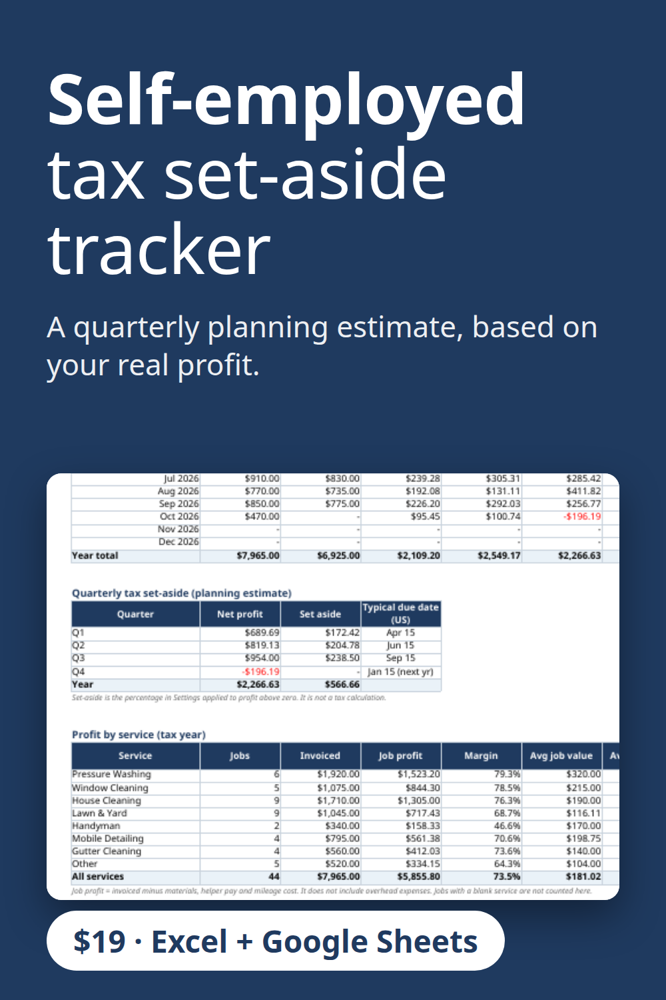

Know how much to set aside for taxes. This self-employed bookkeeping spreadsheet totals your net profit each quarter and applies a set-aside percentage you choose, so tax time is not a surprise. A planning estimate, not tax advice. Includes job profit, expenses and a dashboard. Excel and Google Sheets. $19.
Get the $19 version on Gumroad
Built with the help of AI tools, then tested: every report number was recalculated separately.